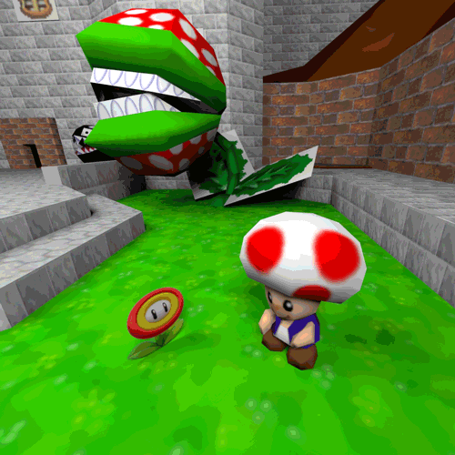

John ‘Feeshy’ Walker is an interdisciplinary artist, curator, designer, and researcher primarily working with new media, video, generative programs, sculpture, and performance art. Across disciplines, his work generally explores issues of technocapitalism, human-computer interactions, and the notion of ‘users’ of design systems.
John's work has been featured internationally including exhibitions at Taman Ismail Marzuki (Jakarta, Indonesia), Satellite Art Show at Art Basel (Miami, Florida), Happy Gallery (Chicago, Illinois), after / time (Portland, Oregon), and Czong Institute for Contemporary Art (Gimpo, South Korea). His work has been written about in BMore Art, Dinner + No Show, and archived in the University of Florida’s Digital Collections. In 2021, he was awarded the Innovative Artist Project Grant to pursue a web-based curatorial project as a part of his larger curatorial alias, POG Gallery of Contemporary & New Media Art.
John holds an M.A. in Art History from VCUarts where he was the recipient of the Margaret N. Gottwald Scholarship and numerous research awards. His culminating research paper, Issues in Design Thinking and the User Experience of Art, explores how design thinking has been utilized to create the illusion of user-centered experiences while benefiting unknown stakeholders. Although this paper focuses on how art spaces have implemented design thinking to control the user experience of visitors (and thus continue to hold and grow their cultural power), the core issues that are addressed can be seen and felt across all sectors of corporations, governments, institutions, etc. that engage in the development of products, services, and experiences.
John also holds a BFA in Art + Technology from the University of Florida where he was the recipient of the Jerry Uelsmann Scholarship. His culminating exhibition centered around the affective nature of American school shooting culture.
John has held positions as a Digital Fabrication Assistant at the University of Florida's Design, Construction, and Planning Fab Lab, Multimedia Specialist at the University of Florida’s Center for Online Innovation & Production, Lead Media Specialist at Virginia Commonwealth University, Senior Designer at Sheetz, and Technical Director at the non-profit art and community space, Moisturizer Gallery.
🐎 🐎 🐎
